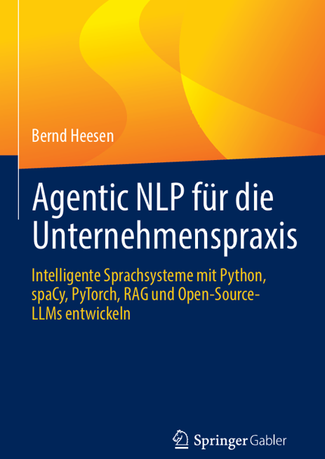

NLP-Grundlagen und Einsatzfelder
Sprachverarbeitung, zentrale Aufgabenstellungen und Anwendungspotenziale im Unternehmen.
Intelligente Sprachsysteme mit Python, spaCy, PyTorch, RAG und Open-Source-LLMs entwickeln
Von der klassischen Textanalyse bis zu agentischen Sprachsystemen: Grundlagen verstehen, moderne Verfahren einordnen und konkrete Anwendungen mit Python entwickeln.

BUCH & BEGLEITMATERIALNatural Language Processing (NLP), große Sprachmodelle und agentische KI eröffnen Unternehmen neue Möglichkeiten, Texte und Informationen auszuwerten, Wissen zugänglich zu machen und Geschäftsprozesse intelligent zu unterstützen.
Dieses Buch verknüpft die methodischen Grundlagen mit der praktischen Umsetzung. Es führt von der Verarbeitung natürlicher Sprache über Machine Learning und Deep Learning bis hin zu Transformern, Retrieval-Augmented Generation (RAG) und kontrollierten agentischen Workflows.
Studierende, Lehrende, Python-Entwicklerinnen und -Entwickler, Data Scientists sowie Fach- und Führungskräfte, die NLP-Verfahren verstehen und in konkreten Unternehmensprojekten anwenden möchten.
Verlag: Springer · ISBN: 978-3-658-53643-5 · Erscheinung angekündigt für März 2027
Verlagslink wird ergänzt, sobald verfügbar.
Die folgende Übersicht beschreibt die zentralen Themenbereiche. Die endgültigen Kapitelnummern und -bezeichnungen werden nach Abgleich mit dem Buch ergänzt.
Sprachverarbeitung, zentrale Aufgabenstellungen und Anwendungspotenziale im Unternehmen.
Werkzeuge, Bibliotheken und reproduzierbare Arbeitsabläufe für die NLP-Praxis.
Tokenisierung, linguistische Analyse, Informationsextraktion und Aufbereitung von Texten.
Textrepräsentationen, Ähnlichkeitsmessung, Klassifikation und weitere Lernverfahren.
Neuronale Netze und modellgestützte Sprachverarbeitung praktisch umsetzen.
Moderne Sprachmodelle nutzen, anpassen und ihre Möglichkeiten bewerten.
Dokumente auffinden, relevante Kontexte bereitstellen und generative Modelle damit verbinden.
Werkzeugnutzung, kontrollierte Workflows, Evaluation, Sicherheit und Praxisprojekte.
Ergänzende Materialien zum Lesen, Üben und eigenständigen Programmieren. Die Verzeichnisse sind angelegt und werden schrittweise gefüllt.
Hinweise zur Einrichtung von Python, benötigten Paketen und Entwicklungswerkzeugen.
Ordner auf GitHub öffnen MATERIAL / 02Python-Quellcode, Beispiele und Übungen passend zu den Inhalten des Fachbuchs.
Ordner auf GitHub öffnen MATERIAL / 03Ergänzende Programmierbeispiele und Aufgaben zu den NLP-Lerneinheiten der vhb.
Ordner auf GitHub öffnenVersionsverwaltung, Ergänzungen und Korrekturen im GitHub-Repository.